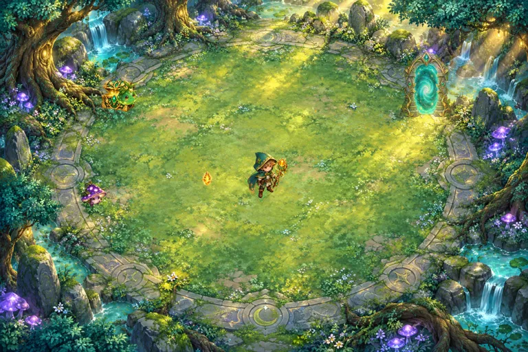
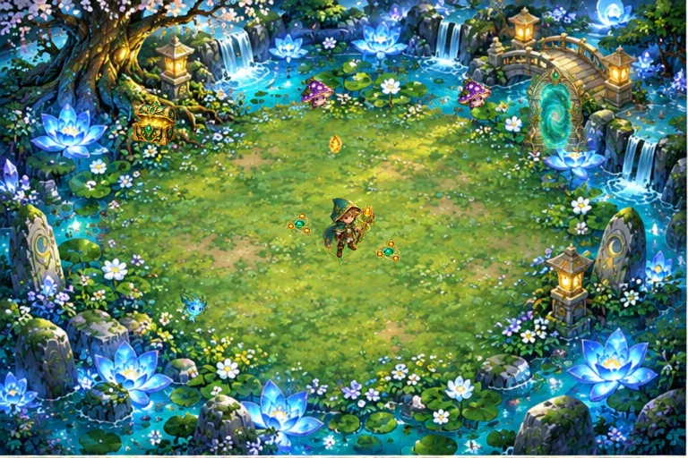
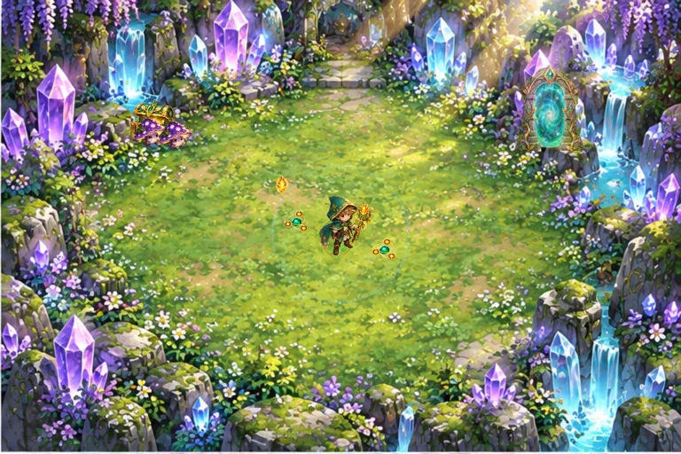
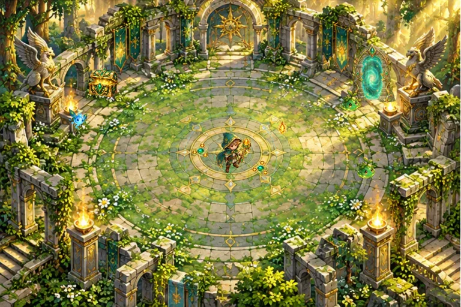
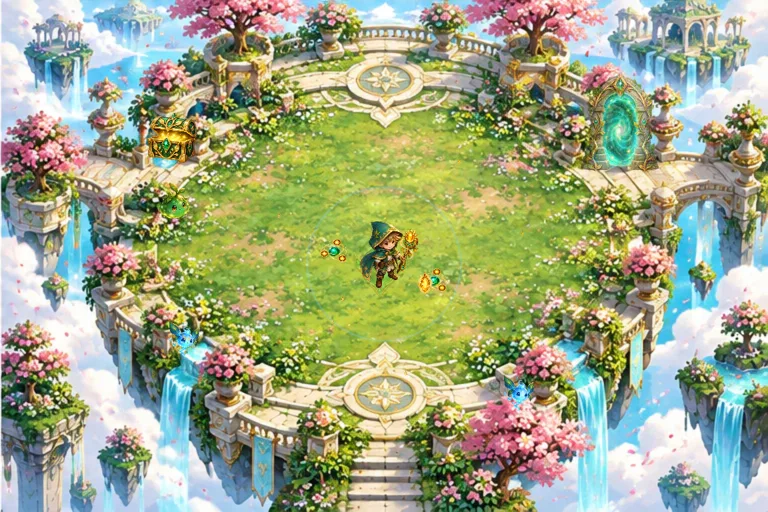
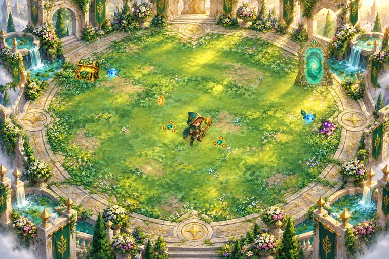

v06 本機驗收候選；本次拼字、慶祝與時間修訂尚未部署正式站。已上線的v05與原手冊保留。
FOREST OF WORDS · SIX STAGESForest of Words 六關英語冒險 — 製作與使用手冊 v06
更新：2026-10-15。v06為本次本機驗收候選，尚未部署此修訂；下列正式站資訊指先前v05版本。此版本已實作六關、分配作答、學生結果頁及教師報表；正式站已於2026-10-15發布至 https://lesson-hub-v03.web.app/lab 。先前單關試玩、原始教材與手冊保留。
1. 教師分配
在 Lesson Studio 完成題目並等待保存成功，按右上角「分配」。依序選擇：
1. 測驗或練習模式。
2. 順序出題或隨機出題。
3. 原本選項順序或隨機排列。
4. 分配名稱、臺灣時間的有效期限、六關遊戲或純答題，以及選填的學號名單。
按「產生學生分配」後會保存當時的題目快照，產生六位數分配碼、學生連結與 QR code。教材投影片與隱藏頁不納入題數；之後修改教材不改動已分配的快照。新教材不會自動加入示範題。
學生輸入五位數學號；同一裝置重新開啟同一分配，可接續保存的進度。若需換裝置，教師在學生作答明細按「協助學生更換裝置」，解除原裝置綁定後，以原學號接續。網址不包含正解。
2. 計分與重試
| 模式 | 拼字題 | 其他題型 | 採計 |
|---|
| 練習 | 無限提交直到答對 | 首次加3次重試，共4次提交 | 每題所有有效提交的最高分 |
| 測驗 | 仍可無限提交直到答對 | 1次提交 | 每題第一次提交的分數 |
答錯或部分答對且仍可重試時，先播放 Try Again 動畫與英文音效，再開放重試。拼字字卡可逐格退回或全部移回；修改字卡不增加提交次數。重新整理保持同一題序與選項順序，重送同一份作答不增加次數或重複發獎。
配對、分類、多選及其他支援部分給分的題目，依題型原有規則計分。未作答的計分題仍計入滿分。文字雲等不計分題不納入滿分。開放題、塗鴉及待查核錄音在教師評分前顯示暫定分數。
錄音沿用正式站既有且已啟用的AI服務，不另外新增服務或金鑰。伺服器確認錄音和評分兩份檔案均保存後才公布成績。結果不明時保留原錄音與提交識別碼，教師可播放並人工評分；不自動再次付費評分。本機驗收不呼叫付費AI，模擬器僅以測試替身驗證保存流程。
3. 道具品質
每道題「第一次完全答對」的提交次數決定品質；只發放一份獎勵。
| 完全答對的提交次數 | 品質 | 道具能量 |
|---|
| 第1次 | 傳說 | 4 |
| 第2次 | 史詩 | 3 |
| 第3次 | 稀有 | 2 |
| 第4次 | 基本 | 1 |
拼字第5次及之後維持基本道具；這沿用前一份手冊的合理預設。用完次數仍未完全答對，不發道具，但保留應採計的學習分數。測驗拼字即使後來答對，學習成績仍保留首次分數；道具依首次完全答對的次數決定。教師人工更正評分可更新該題既有道具品質，不重複增加道具件數。
4. 六關設計
30題每關5題；35題分配為6、6、6、6、6、5題。其他題數盡量平均分配；少於6題則只啟用相應關數。
| 關卡 | 場景 | 累計道具種類 | 本關新增 |
|---|
| 1 | 單字森林 | 3 | 日光法杖、葉盾、輕巧靴 |
| 2 | 月光池畔 | 4 | 星環球 |
| 3 | 水晶林地 | 5 | 冰晶鈴 |
| 4 | 古老遺跡 | 6 | 閃電羽 |
| 5 | 天空花園 | 7 | 治癒花 |
| 6 | 曙光城堡 | 8 | 曙光羽翼 |
每關首個完全答對的題目優先給予本關新增道具，其餘題目從已解鎖種類取得獎勵。道具跨關保留。法杖加強射擊，葉盾減傷，靴子加速，星環造成近身傷害，冰晶鈴緩速，閃電羽連鎖攻擊，治癒花定時恢復，曙光羽翼提供衝刺。多件同類裝備的增益採逐漸放緩的成長，避免後期失衡。
每關敵人體力約增加5%、速度約增加2%，逐關略增。桌機華麗畫質上限20名敵人，省電上限12名；粒子上限90個。每段約12秒自動進入英語挑戰，也可按「前往英語挑戰」。答題期間戰鬥暫停。體力耗盡可回營地恢復，保留已保存的成績與道具。
操作：WASD、方向鍵或畫面觸控方向鍵。解鎖羽翼後用 Shift 或衝刺鍵。畫質可選自動、華麗60FPS、省電30FPS；目標值不代表所有裝置皆能達成。
5. 華麗結果頁
所有題目完成後，後端一併保存學習完成時間及遊戲結算。結果頁用城堡場景、角色登場、星光雨、旋轉光芒、金色徽章、分數遞增與逐件道具揭曉動畫呈現。
✦ 學習總成績：本次測驗或練習的總分／滿分、答對率、全對及部分答對題數。
✦ 遊戲最後結果：完成關數、擊退數、獨立遊戲分數、遊戲時間與營地恢復次數。
✦ 冒險寶庫：獲得的道具、品質、件數及能量；首次完全答對題數與傳說道具數。
✦ 可展開逐題首次／最高／採計分數、重新讀取已保存成績、列印、重播慶祝動畫、音效及減少動態效果。
遊戲分數為擊退數×10，與英語總分分開。遊戲遙測只用於戰果展示，不是防作弊競賽排名依據。正式學習分數、提交次數與獎勵由後端決定。待人工評分時會標示「暫定總分」，不會偽裝已完成評分。
6. 教師報表
課程庫「分配與學生作答」選擇分配後，每5秒更新一次。預設按答對率由高到低，相同時按學號；可切換學號／座號排序。每題用綠色全對、黃色部分答對、紅色答錯、灰色未作答、紫色待評分呈現。
點擊學號可查看原題快照、逐次答案、首次與最高分、採計分數、道具品質，以及學生遊戲最後結果。人工評分先檢查版本，避免覆蓋另一頁的新進度。可下載保護試算表公式的CSV。學生不能讀取其他學生的紀錄、教師答案快照或直接改寫成績。
作答到有效期限後停止新作答，已保存的成績仍可查閱。分配及錄音保存至截止日起180天；排程清除須正式站已啟用既有保存期限服務。
7. Godot 與素材
六關是本機Godot 4.7.2的GDScript場景；角色、敵人、道具和六種場景使用既有及本輪內建ImageGen素材。原始PNG、生成紀錄與雜湊保留，前端以WebP播放。英文字型Comic Relief。
採Compatibility、單執行緒Web匯出。Godot管理移動、射擊、碰撞與畫面；Lesson Hub管理正式題目、登入、提交、計分、獎勵及報表，兩者以限定同來源且帶實例識別碼的訊息串接。遊戲下載清單逐檔驗證SHA-256，快取僅限遊戲路徑，不攔截教師驗證與後端API。
可在Godot編輯器修改forest.gd、forest.tscn或assets；編輯器原生執行是戰鬥預覽，完整英語流程在瀏覽器。CLI參數--review-level=1至6可檢查各場景。重新匯出後須更新下載清單及快取版本，避免學生載入舊封包。
圖片匯入採保留透明度的Lossy紋理壓縮，原始PNG不改動。此方法依[Godot官方圖片匯入文件](https://docs.godotengine.org/en/stable/tutorials/assets_pipeline/importing_images.html)適用大型2D圖片；本輪將六關PCK降至約3.35MB，仍需另載入Godot引擎。
8. 下載與本機體驗
學生結算頁提供六關Web ZIP、Godot可編輯專案ZIP與此手冊。
Web ZIP內含可操作的35題示範、兩種模式、兩種題序與選項順序、六關戰鬥與結果頁。解壓後執行「啟動遊戲.cmd」，或在該資料夾以Node執行node server.mjs，再開啟http://127.0.0.1:5199 。不能直接雙擊HTML啟動WebAssembly遊戲。示範題幹會直接標示目標單字。
下載的本機體驗成績僅存在該瀏覽器，不會送到正式教師後台；畫面會持續標示這點。正式班級作答請使用教師產生的Lesson Hub分配連結。Godot來源ZIP不包含憑證、教師驗證設定或真實學生紀錄。
9. 目前驗證與上線界線
已驗證：35題瀏覽器全程、六關及八種道具、第四次全對基本品質、第二次拼字成功史詩品質、重開字母順序、學生350/350及獨立遊戲200分、教師讀回逐次答案；自動測試涵蓋兩模式×題序×選項8組合、拼字第101次、部分分、重送與併發、保存及權限。另以Firebase模擬器驗證真正Firestore交易、服務重建後讀回、學生禁止直接讀寫Firestore與Storage，以及分配素材權限。
桌機瀏覽器曾短時間顯示華麗約56–60FPS、省電30FPS；這不是長時間滿載或校園網路驗收。真實iPad Safari、觸控長按、校網冷載入、音訊聽感、教師實際題庫與真實AI錄音評分仍需驗收。正式Firebase已於2026-10-15部署；本次未新增正式課程或學生作答。實際班級端到端與AI評分待教師驗收。
本次正式釋出已核對lesson-hub-v03 Hosting以及liveV2、liveAudioV2、liveMediaV2、liveRetentionV2，並通過既有教師驗證部署檢查。不能用本機研發的教師角色標頭當作正式教師認證。
10. 作答與遊戲分頁（v05）
✦ 遊戲闖關與英語作答使用各自獨立的畫面。同一分配連結內切換，遊戲引擎保留載入狀態。
✦ 進入英語挑戰時暫停戰鬥與關卡背景音樂，呈現題目及回饋；答完按「領取獎勵，回到遊戲」續玩。最後一題前往總成績與遊戲結算。
✦ 提交、重試與繼續操作固定於作答頁底部；過長題幹、媒體或多小題只捲動內容區。桌機、平板與手機以各自的可用高度排版，保留文字及圖片可讀性。
✦ 暫停不扣血、不計遊戲時間。角色位置、裝備與已保存英語成績保留；分頁失去可見狀態時暫停，回來按「繼續冒險」。
✦ 短暫淡入淡出尊重系統減少動態效果設定。
11. 豐富遊戲聲音（v05）
新增14種原創程式合成效果：射擊、命中、擊退、受傷、護盾、星環、冰晶、閃電、治癒、衝刺、英語挑戰、依品質變化的獎勵、關卡登場與營地恢復。音效依實際Godot事件觸發，加入音高變化、柔和打擊聲與左右位置感。
六個關卡具有不同的柔和音樂循環，包含和聲、旋律、低音與輕打擊。右上「聲音」可調整遊戲音量、獨立切換背景音樂及試聽獎勵；「靜音」立即停止遊戲音樂與效果。開始本關／開啟聲音的點擊用來取得瀏覽器音訊播放許可。
聲音直接在裝置合成並保留記憶體快取，無新增音效MP3或外部服務下載。密集事件有個別冷卻與同時發聲上限，輸出帶動態壓縮，減少過吵與削波。作答畫面不繼續播放戰鬥聲，題目自帶的錄音播放功能仍由學生操作。
Godot原生場景發送戰鬥事件；完整聲音混音由Lesson Hub或下載版的網頁主程式負責。來源ZIP的tools/web-audio提供同版本聲音模組。真實iPad/Safari播放限制、喇叭／耳機音量及主觀聽感仍需教師確認。
12. 拼字大小寫、固定空格與慶祝結果（v06）
✦ 教師輸入Chinese、English會保留大寫C、E；干擾字母同樣保留輸入大小寫。學生必須使用正確大小寫的字卡。
✦ 編輯器可逐字輸入social studies，空格不會在輸入下一個單字前被刪掉。片語的單字格之間固定一格空白，學生只排列字母；評分重建完整片語後比較。
✦ 新編輯／新建拼字題採spell-2；舊題與已發出的分配快照保留spell-1規則。舊題可能已被存成小寫，教師須依教材確認並修正後重新儲存；不自動推測專有名詞，不追溯改分。
✦ 結果頁以大字學號與實際遊戲主角並列；桌機、平板、手機皆可辨認自己的學號與角色。
✦ 首次進入結果頁播放7.8秒勝利音樂＋掌聲，沿用遊戲音量／靜音；可重播。重新整理後若瀏覽器尚未取得播放許可，顯示明確播放按鈕。靜音時不自動解除靜音；離開或背景分頁時停止慶祝。
✦ 此慶祝音效使用隨包MP3（78,138 bytes），OGG（83,247 bytes）為備援；不依賴外部網站即時串流。來源、CC0授權與SHA在survivors/v1/celebration/sources.json與LICENSE.txt。v05的14種戰鬥／道具合成聲及6關音樂保留。
13. 後段遊戲時間逐關增加（v06）
| 關卡 | 每題前自動遊戲時間 |
|---|
| 1 單字森林 | 15秒 |
| 2 月光池畔 | 17秒 |
| 3 水晶林地 | 19秒 |
| 4 古老遺跡 | 21秒 |
| 5 天空花園 | 23秒 |
| 6 曙光城堡 | 25秒 |
原固定12秒已改為逐關延長；開始關卡提示本關秒數。只有實際遊戲時間計入，作答／暫停不計時，原「前往英語挑戰」仍可提早進入。30題合計約10分鐘、35題約11分35秒，不含作答、暫停、恢復與手動提早切換。
六個 Godot 實際場景

第1關
第2關
第3關
第4關
第5關
第6關